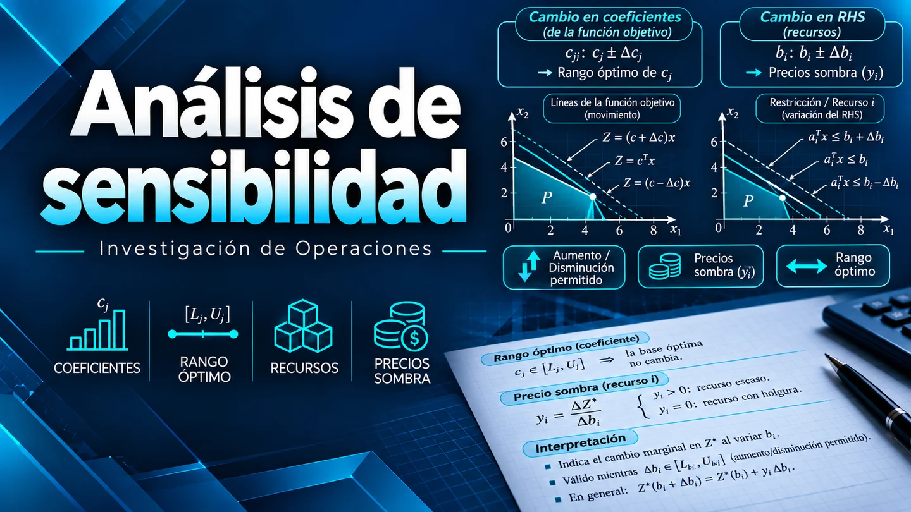

Módulo 2 · Investigación de Operaciones
Análisis de sensibilidad
Analiza cómo los cambios en los coeficientes y los recursos afectan la solución óptima.
¿Qué es el análisis de sensibilidad?
Estudia cómo determinados cambios afectan una solución óptima de programación lineal. El Informe de Sensibilidad de Excel Solver presenta información sobre las variables de decisión y las restricciones.
Los intervalos se interpretan modificando un dato a la vez y manteniendo los demás constantes. Fuera de ellos se necesita volver a resolver el modelo.
Celdas de variables
| Variable | Valor final | Costo reducido | Coeficiente objetivo | Permisible aumentar | Permisible reducir |
|---|---|---|---|---|---|
| Puertas (x₁) | 2 | 0 | 3 | 4.5 | 3 |
| Ventanas (x₂) | 6 | 0 | 5 | 1E+30 | 3 |
El valor final indica 2 puertas y 6 ventanas en la solución. Los coeficientes objetivo son 3 y 5, respectivamente.
Para puertas, el coeficiente puede encontrarse entre 3 − 3 = 0 y 3 + 4.5 = 7.5 sin perder la optimalidad de la solución actual; en los extremos pueden aparecer soluciones alternativas.
Para ventanas, el coeficiente puede reducirse de 5 a 2. Solver usa 1E+30 para indicar un aumento sin límite superior finito práctico en este informe.
El costo reducido es cero para ambas variables positivas de la solución. Para una variable con valor final cero ayuda a interpretar cuánto debe mejorar su coeficiente objetivo para resultar conveniente.
Restricciones y precio sombra
| Restricción | Valor final | Precio sombra | Lado derecho | Permisible aumentar | Permisible reducir |
|---|---|---|---|---|---|
| Planta 1 | 2 | 0 | 4 | 1E+30 | 2 |
| Planta 2 | 12 | 1.5 | 12 | 6 | 6 |
| Planta 3 | 18 | 1 | 18 | 6 | 6 |
El valor final es el recurso utilizado; el lado derecho es su disponibilidad. Planta 2 utiliza las 12 unidades disponibles y Planta 3 las 18.
El precio sombra estima cuánto cambia el objetivo por una unidad adicional del lado derecho, dentro del intervalo permitido.
Planta 2
De 6 a 18 unidades
Su precio sombra es 1.5: aumentar una unidad disponible aumenta el objetivo en 1.5 unidades mientras se mantenga válido este intervalo.
Planta 1
Usa 2 de las 4 unidades disponibles: quedan 2 sin utilizar. Su precio sombra es cero; aumentar la disponibilidad no mejora el objetivo dentro del rango indicado.
Planta 3
De 12 a 24 unidades
Dentro de ese intervalo, su precio sombra de 1 permite estimar el cambio del objetivo al variar su disponibilidad.
Conclusión
El informe muestra qué cambios mantienen la solución actual y cuáles recursos tienen valor marginal. Planta 2 y Planta 3 tienen precios sombra de 1.5 y 1; Planta 1 presenta cero porque conserva capacidad sin utilizar.
Videos explicativos
